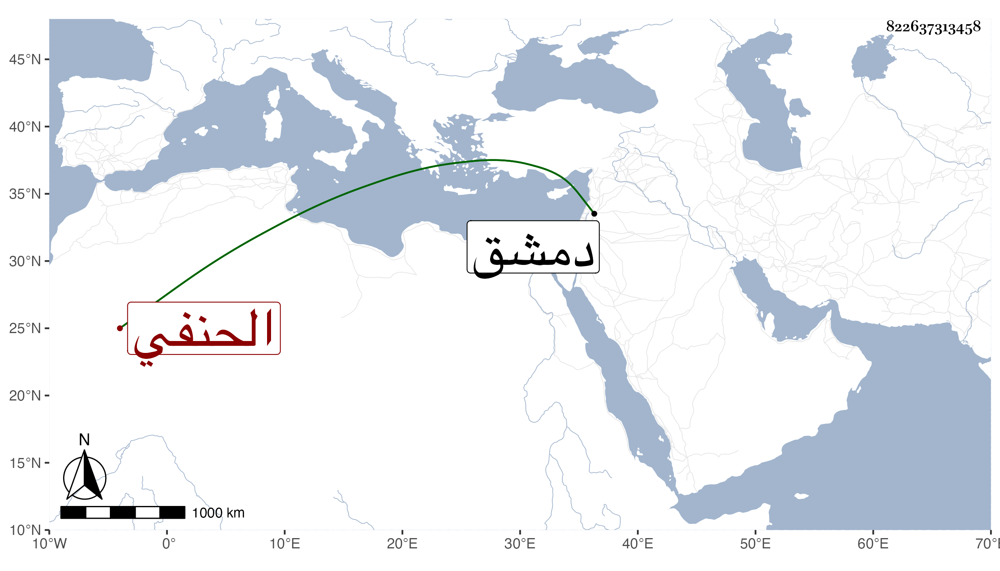

0902Sakhawi.DawLamic.ITO20230111-ara1.EIS1600.822637313458
Biography ID: 822637313458
858
نعمان بن فخر بن يوسف الشرف أبو محمد بن فخر الدين الحنفي . ولد سنة ثلاث وأربعين وسبعمائة وكان أبوه عالما فأخذ عنه وقدم دمشق قديما وجلس بالجامع الأموي بعد اللنك للإشغال ودرس أيضا بغيره من الأماكن كالعزية البرانية وولي مشيخة الحسامية وسكنها وكذا سكن النورية بعد الفتنة وكان ماهرا في الفقه مفتيا مشاركا في أصوله والنحو والعقليات . مات في عاشر شعبان سنة عشرين بالمرستان النوري من دمشق ودفن في مقابر الصوفية وذلك بعد أن فرق كتبه وموجوده على الفقراء . ذكره شيخنا في إنبائه باختصار عما هنا وكذا ذكره ابن قاضي شهبة وأثنى عليه وعلى أبيه رحمهما الله .
